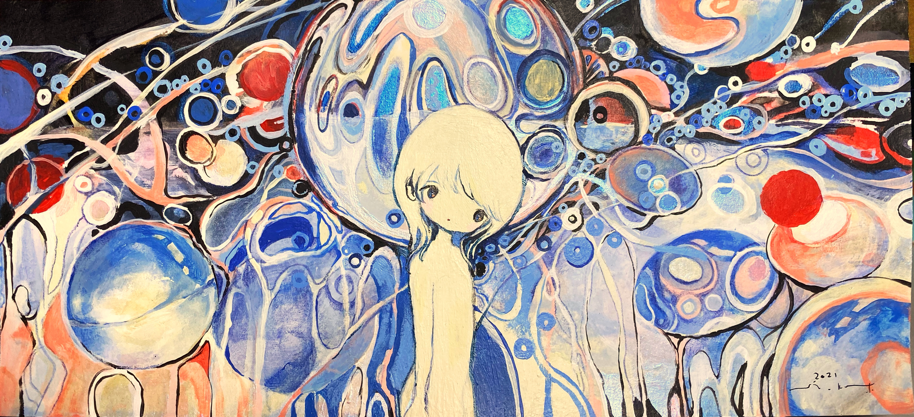
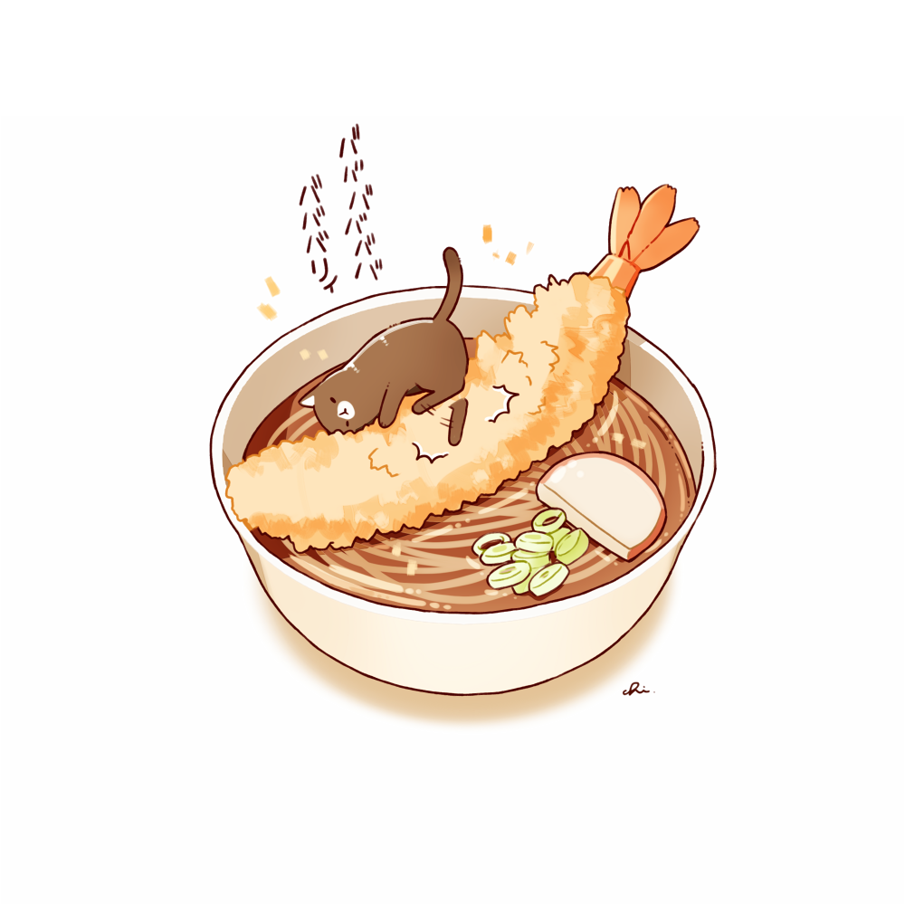

KISS THE NORTH by きたむらしゅ〜 link to piece
The rendering through ink to which everything is given a form. The claustrophobic details. The yellow which emphasizes specific points in a seemingly random order.
5 picture envelopes by 黄菊しーく ／ si_ku.kLink to origin
This artist repeatedly uses the same character in very similar bubble-like scenery. Very spiritual. cosmic. 4-5 colors max. It is a tiny world where these small people live.
年越しそば by チャイLink to origin
This artist whose name I will not even try to pronounce creates cats pretending to be food, cats in/on food and they're adorable. I'm feeling kind of hungry so the last image will be of a cat on shrimp tempura, in what looks like ramen with fish cake and green onions.
The end
Interactive web narrative main page link
Return to home pagehome